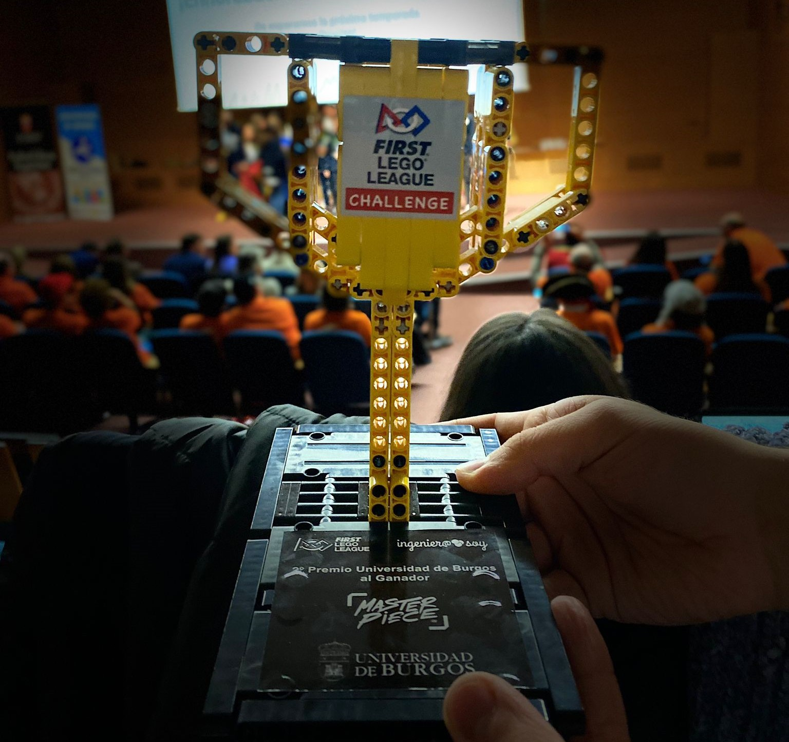
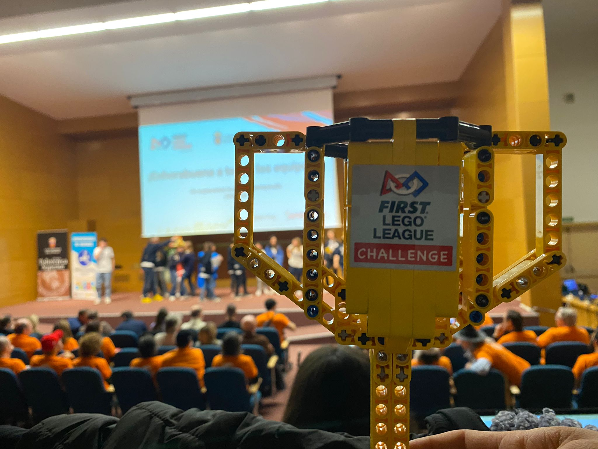
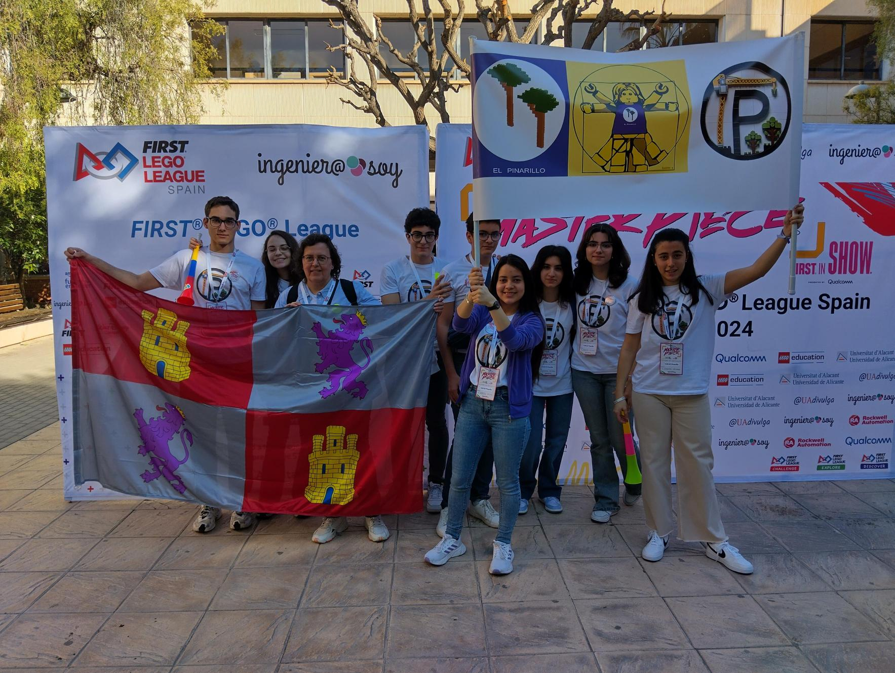

9 | 2
miembros | entrenadores



Sobre nosotros
¡Conoce al equipo del Pinarillo!
Somos un equipo de 9 miembros de alumnos de 3ºESO y 1ºBach, y 2 entrenadores aficionados a la tecnología, la informática y la robótica. El 24 de febrero de 2024, tuvimos la oportunidad de participar en la fase regional en la Universidad de Burgos, ¡consiguiendo el 2º premio ganador!
¡El equipo Pinarillo vuelve a la carga!
El 16 de marzo de 2024, participamos en la final de Alicante con más misiones, mejoras en el proyecto científico y mucha ilusión.

¡Escucha la entrevista de uno de nuestros entrenadores!
Adelante al minuto 30 para escuchar la entrevista
¡Haga click aquí!¡Léenos en el Norte de Castilla!
El equipo 'Pinarillo' del IES Pinar de la Rubia, integrado por alumnos de 4º de ESO y 1º de Bachillerato y, entrenado por los profesores David García y Ana de Luis, ha conseguido el 2° Premio del XIII Torneo de First Lego League organizado por la Universidad de Burgos.
Leer más